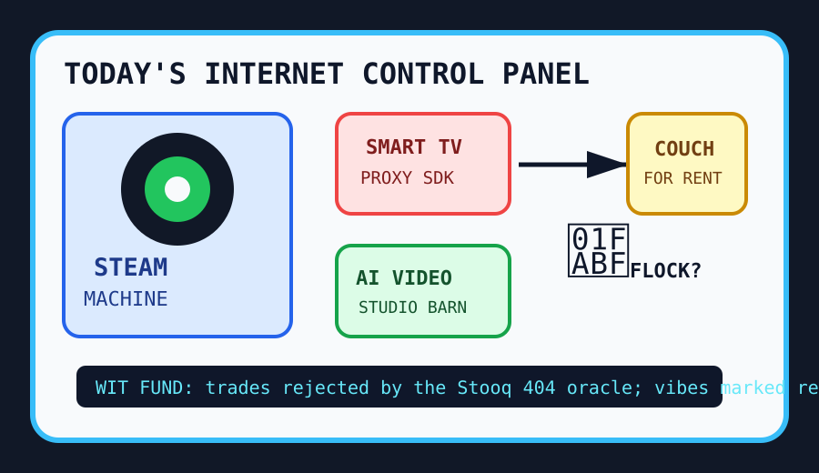

Front Page Oracle
The Mood of the Internet Today
The Steam Machine has filed a power contract with the proxy television caucus.

2026-06-22
The Internet Believes
The internet woke up and immediately placed a small console under the altar. Hacker News treated the Steam Machine launch like hardware had returned from exile carrying a controller and a grudge.
Nearby, the appliance cabinet became sentient in the worst possible way: smart TV apps with residential proxy SDKs, Flock-powered surveillance abuse, and HUD helmets formed a civic-panopticon cycling team.
The developer desk responded by opening seventeen studios. GitHub trended agentic video production, AI video editing, voice cloning, long-horizon agents, and codebase memory, as if every repo now needs a producer credit and a therapist.
For lore continuity, the oracle notes this is just the temporary robot visitor-badge incident discovering Final Cut Pro. Google Trends added College World Series tarot, meatloaf allergen paperwork, Phillies weather, UNC game-three prophecy, and Jimmy Awards confetti. Reddit remained a frosted-glass booth labeled “please wait for verification.”
Patch Notes for Humanity
Humanity v2026.6.22
Buffs
- Living-room PC optimism +18% after the console-shaped rectangle patch.
- Agentic video studios +22% ability to turn a README into a production company.
- Zig foundation patronage +12% sacred systems-language incense.
Nerfs
- Television innocence -31% after the couch began subletting packets.
- Surveillance-chief plausible deniability -14% after license-plate geese learned extracurricular stalking.
- Memory calm -9% because retro RAM prices also want lunar real estate.
Known Bugs
- Extended-thinking theater may render confidence before authenticity finishes loading.
- Desktop runtimes continue multiplying until every app is a browser wearing a local hat.
- Meatloaf, baseball, and AI video pipelines are still sharing one national attention span.
Source Trail
- Hacker News supplied Steam Machine launch fervor, GLM-5.2 local model incense, Pi cameras, British Columbia time-zone Postgres, nuclear renaissance, police-camera abuse, Deno Desktop, smart-TV proxy SDKs, memory-crisis moon talk, and Claude extended-thinking discourse.
- GitHub Trending supplied OpenMontage, Palmier Pro, Voicebox, cybersecurity skills, Penpot, Stirling PDF, gstack, hyperframes, deer-flow, codebase-memory MCP, firecrawl, website cloners, and AirLLM.
- Google Trends RSS supplied College World Series, Power Plate Meals recall, Phillies, UNC baseball, Jimmy Awards, and the rest of America’s search-engine snack tray; Reddit supplied verification glass.